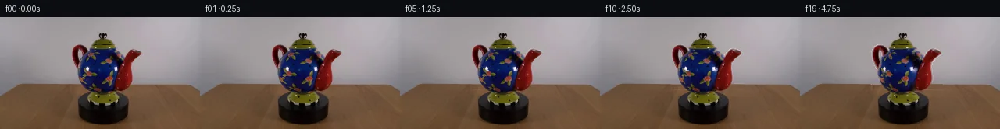

![首帧]()

Round 00
2026-11-05T10:27:37.167368+00:00像素候选变化代码 +182/−0inspection 更新
pixels d8001ce3ea92e59f · code af813d5d26984722
查看本轮 generate.py 真实 diff
--- previous/generate.py +++ current/generate.py @@ -0,0 +1,182 @@ +from pathlib import Path + +import cv2 +import numpy as np +from PIL import Image, ImageDraw + +import artifact_io + + +ROOT = Path(__file__).resolve().parent +W, H = 256, 144 +PIVOT_X = 132.0 + + +def soft_mask(binary: np.ndarray, sigma: float = 0.65) -> np.ndarray: + """Return a restrained antialiased mask without enlarging its support.""" + a = cv2.GaussianBlur(binary.astype(np.float32), (0, 0), sigma) + return np.clip(a, 0.0, 1.0) + + +def alpha_over(dst: np.ndarray, src: np.ndarray, alpha: np.ndarray) -> np.ndarray: + a = alpha[..., None].astype(np.float32) + return np.clip(dst.astype(np.float32) * (1.0 - a) + src.astype(np.float32) * a, + 0, 255).astype(np.uint8) + + +def red_attachment_masks(im: np.ndarray): + """Locate the red handle/spout and include their dark antialiased rims.""" + r, g, b = [im[..., i].astype(np.int16) for i in range(3)] + red = (r > 48) & (r > g * 13 // 10) & (r > b * 11 // 10) + handle_roi = np.zeros((H, W), np.uint8) + spout_roi = np.zeros((H, W), np.uint8) + handle_roi[32:94, 90:116] = 1 + spout_roi[36:95, 147:184] = 1 + + def make(roi): + core = (red & (roi > 0)).astype(np.uint8) + core = cv2.morphologyEx(core, cv2.MORPH_CLOSE, + cv2.getStructuringElement(cv2.MORPH_ELLIPSE, (3, 3))) + # Two pixels collect the dark outline and edge antialiasing around the red glaze. + return cv2.dilate(core, cv2.getStructuringElement(cv2.MORPH_ELLIPSE, (5, 5))) * roi + + return make(handle_roi), make(spout_roi) + + +def body_mask() -> np.ndarray: + # Hand-measured main-pot silhouette, deliberately inset so its original outline stays crisp. + contour = np.array([ + [117, 35], [146, 37], [154, 46], [159, 58], [160, 72], + [157, 86], [150, 97], [143, 102], [120, 101], [111, 95], + [104, 84], [101, 69], [103, 55], [109, 43] + ], np.int32) + m = np.zeros((H, W), np.uint8) + cv2.fillPoly(m, [contour], 1) + return cv2.erode(m, cv2.getStructuringElement(cv2.MORPH_ELLIPSE, (3, 3))) + + +def ellipse_mask(cx, cy, rx, ry, inset=0.0): + yy, xx = np.mgrid[0:H, 0:W] + return (((xx - cx) / (rx - inset)) ** 2 + ((yy - cy) / (ry - inset)) ** 2 <= 1).astype(np.uint8) + + +def curved_yaw(source: np.ndarray, mask: np.ndarray, theta: float, + cx: float, cy: float, rx: float, ry: float): + """Inverse-map a visible ellipsoid as it yaws around its vertical axis.""" + yy, xx = np.mgrid[0:H, 0:W].astype(np.float32) + vertical = np.clip((yy - cy) / ry, -0.999, 0.999) + half_width = np.maximum(1.0, rx * np.sqrt(np.maximum(0.001, 1.0 - vertical ** 2))) + u = np.clip((xx - cx) / half_width, -0.9995, 0.9995) + longitude = np.arcsin(u) + source_longitude = np.clip(longitude + theta, -np.pi / 2, np.pi / 2) + map_x = (cx + half_width * np.sin(source_longitude)).astype(np.float32) + map_y = yy.astype(np.float32) + warped = cv2.remap(source, map_x, map_y, cv2.INTER_CUBIC, + borderMode=cv2.BORDER_REPLICATE) + return warped, soft_mask(mask) + + +def warp_attachment(source, binary_mask, theta, vertical_sign): + """Foreshorten an attachment toward the rotation axis, with slight depth travel.""" + c = float(np.cos(theta)) + # Rotating away/toward the camera has a subtle vertical image component in this view. + dy = vertical_sign * 0.055 * np.degrees(theta) + mat = np.array([[c, 0.0, PIVOT_X * (1.0 - c)], [0.0, 1.0, dy]], np.float32) + premult = source.astype(np.float32) * binary_mask[..., None] + rgb = cv2.warpAffine(premult, mat, (W, H), flags=cv2.INTER_CUBIC, + borderMode=cv2.BORDER_CONSTANT, borderValue=0) … diff truncated; 95 more lines …